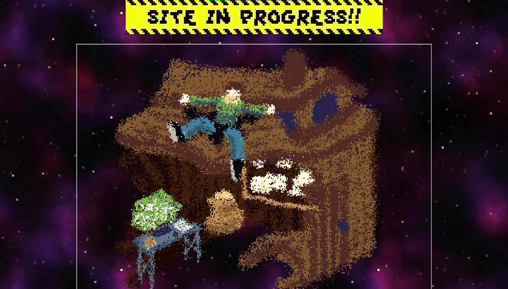

welp. this is crazy. the spud shack is one year old.
honestly when i made a neocities account a year ago i wasn't expecting to get this far but i've just had an absolute blast whittling away at this ever-growing website
i genuinely can't believe it's been an entire year. in meantime i did my first year at university, learnt the accordion surprisingly quick and got really involved with folk music and theatre tech.
maybe because of that, starting this site and a bit of coding burnout i've not done as many projects. for half the year i basically did nothing except tweak stove but i would say that i've kind of gotten back into it now, having made skyweb not too long ago and starting work on a game of my own... hopefully i'll have more to say about that later
in terms of the shack though there's been amazing progress... luckily i know the importance of version control so i have every single version of the site right at my fingertips! shall we have a look down memory lane? (rhetorical question get pulled into my archives idiot)
oh wow this is crazy. this was the first ever commit! at the time i was using a font that really doesn't suit the current fuzzy vibe and everything just linked to my github  that's looking for familiar, especially since i've now added the background which is actually the texture from blue fire's galaxy cloak downscaled! it essentially stayed like this for a bit until i added the hay and the rest of the links and animated myself! i'm really pleased with the current look - it just feels cozy!
but that's not it! let's have a look at some other first drafts!

honestly these are pretty close to the current versions of the
desk,
coding,
me,
art and
cities pages.
i'm actually quite keen to do a better about me because currently i don't think it's up to par
the thoughts page has actually undergone the most iteration out of all the pages the first draft was just a list of articles and clicking would display one then i thought that maybe i should categorise them and that led to this really fun style which i then ran with for the whole page!
and that leaves the shrines pages!
not much to say about the index it's just a todo list and some links
ah blue fire was my first one!
i really wasn't sure what i wanted from it visually so i just regurgitated everything i wanted to write (a lot)
and slapped it on the starting cutscene in summary tags - i really liked hovering over the onop language decoding it so that was kept.
the scrapbook aesthetic i ended up with kinda came from it more being a recording of my experiences with the game and community so it felt very personal.
pseudoregalia was very much a similar case of me being very attached so i built it using the same style
i was able to change it up with the modding shrine thankfully - i started by implementing the console so it's essentially the same
similarly, i thoroughly planned out the rainworld shrine which meant it basically came out fully formed
 and the pokemon shrine brings us to the present!
this one is a huge undertaking and i've kind of slowed down on this front because i'm a bit intimidated by it
but so far i've talked about the franchise as a whole and stubbed out the rest of the sections with my playthrough teams.
i have technically already done ultra sun, silver and diamond in the logs but i just need to do the art :p
and the pokemon shrine brings us to the present!
this one is a huge undertaking and i've kind of slowed down on this front because i'm a bit intimidated by it
but so far i've talked about the franchise as a whole and stubbed out the rest of the sections with my playthrough teams.
i have technically already done ultra sun, silver and diamond in the logs but i just need to do the art :p
and that concludes a year of the spud shack! neocities has been a really cool place to host the site since i get to see other sites grow alongside my own and exist among webmasters even more passionate than me which is truly inspiring. thank you to everyone following along and here's to another year!